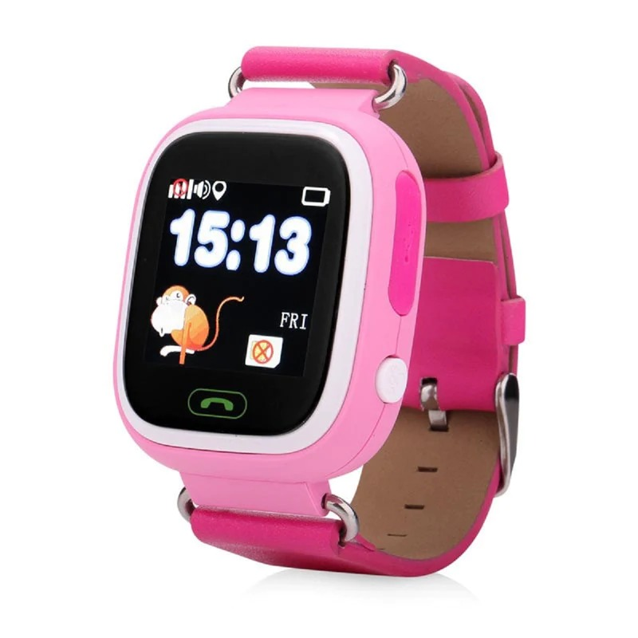
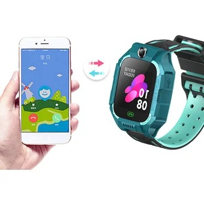

SMARTWATCH GPS INFANTIL Q90 CON RASTREADOR Y LLAMADAS

El padre puede personalizar la gama de seguridad.cuando el niño, sale más allá de la zona de seguridad, la aplicación le avisara con notificacion oportuna.los niños pueden presionar la tecla SOS durante 3 segundos para obtener ayuda cuando están en peligro se convierten en lighht anti-perdido, sensor de luz trasera de los relojes se envía la alerta al teléfono celular cuando se quita
El padre puede personalizar la gama de seguridad.cuando el niño, sale más allá de la zona de seguridad, la aplicación le avisara con notificacion oportuna.los niños pueden presionar la tecla SOS durante 3 segundos para obtener ayuda cuando están en peligro se convierten en lighht anti-perdido, sensor de luz trasera de los relojes se envía la alerta al teléfono celular cuando se quita
GPS Tracker Watch

GPS Tracker Watch también tiene rastreador GPS, llamada de dos vías, SMS, SOS, Cerca electrónica, temporizador, FIASHIGHT, chat de voz, modo de aula, monitor remoto de la aplicación. Cuando esté en peligro, presionando el largo en el botón SOS del reloj, recibirá un mensaje SOS de inmediato.
GPS Tracker Watch también tiene rastreador GPS, llamada de dos vías, SMS, SOS, Cerca electrónica, temporizador, FIASHIGHT, chat de voz, modo de aula, monitor remoto de la aplicación. Cuando esté en peligro, presionando el largo en el botón SOS del reloj, recibirá un mensaje SOS de inmediato.